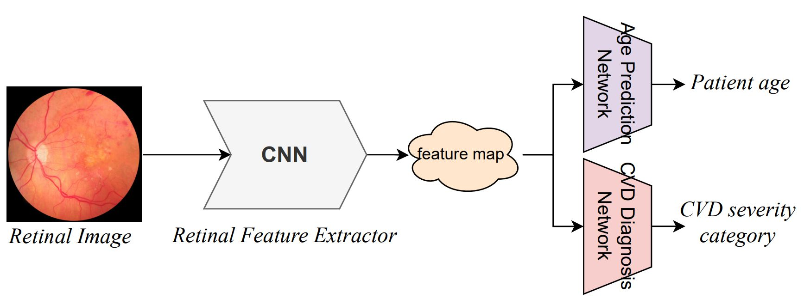
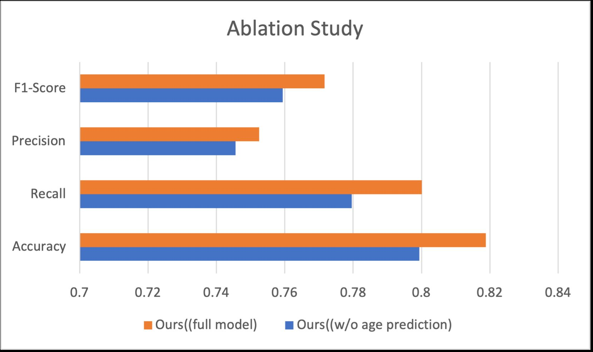

Learning Cardiovascular Risk Signals from Retinal Images
Can an auxiliary age-prediction task help a neural network classify cardiovascular disease severity from a retinal image? That question motivated our multitask learning study, Age-guided Cardiovascular Disease Diagnosis from Retinal Images: A Multitask Deep Learning Framework, advised by Devon Marks.
I worked on CNN-based classification and the use of YCbCr retinal features. This article explains the shared model, the experiments used to test it, and what the results show.
Why retinal images?
Retinal imaging offers a non-invasive view of blood vessels. Our study explored these images as a source of information associated with coronary artery calcium, which is conventionally assessed with CT imaging.
We formulated the problem as four-class classification using coronary artery calcium score (CACS) thresholds: 0, above 0 through 100, above 100 through 400, and above 400. These are severity labels derived from calcium scores; the task is not a prediction of future cardiac events.
The central idea was to make the learned representation serve two related tasks. Instead of training only a severity classifier, we also asked the model to predict age from the same image features.
A shared representation, two tasks

An ImageNet-pretrained ResNet-101 extracts retinal features. Two separate, two-layer networks then predict age and the four severity categories. Sharing the backbone lets both objectives influence the same representation.
The training objective combines cross-entropy for severity classification with L1 error for age:
Ltotal = LCE + α Lage
The weight α controls the auxiliary task’s contribution. Keeping it below one reduces its influence relative to the primary classification objective. The paper reports training with stochastic gradient descent for 110 epochs, a learning rate of 0.0001, and a batch size of 512.
Designing the comparison
The paper describes retinal images from 37,295 patients, with an average age of 59.3 years. The four classes are imbalanced: approximately half the samples belong to the zero-calcium category. We used five-fold cross-validation and reported accuracy, precision, recall, and F1-score.
Three comparisons separate the effects of architecture, auxiliary supervision, and image representation:
- Model baselines: compare the full approach with VGG19, MobileNetV2, HRNet-32, DenseNet-121, and ResNet-101.
- Age ablation: remove the age-prediction head while retaining the stated training protocol.
- Color inputs: compare RGB, grayscale, and YCbCr, which separates luminance from chrominance.
What changed with age guidance?

| Configuration | Accuracy |
|---|---|
| Without age-prediction head | 0.7994 ± 0.0007 |
| Age-guided model, RGB | 0.8188 ± 0.0011 |
| Age-guided model, YCbCr | 0.8207 ± 0.0007 |
Adding age prediction increased accuracy from 79.94% to 81.88%, a gain of 1.94 percentage points. Changing the full model’s inputs from RGB to YCbCr added a smaller 0.19 percentage points, reaching 82.07%.
These comparisons are useful because they ask different questions. The ablation tests the value of age supervision; the color-space experiment tests the input representation. The larger change here came from the auxiliary task.
Reflections
This project gave me experience connecting a domain-motivated hypothesis to a model architecture and an ablation study. A high aggregate score alone does not explain why a model improves; changing one component at a time makes the result easier to interpret.
The reported cross-validation results describe this study’s dataset. Questions for further work include performance across independent populations and imaging conditions, calibration, and errors in the smaller severity classes.
Sources: the coauthored JSR paper and the supplied IGO presentation. Numerical tables follow the published paper; figures are extracted from the presentation. These are the original study’s reported results.